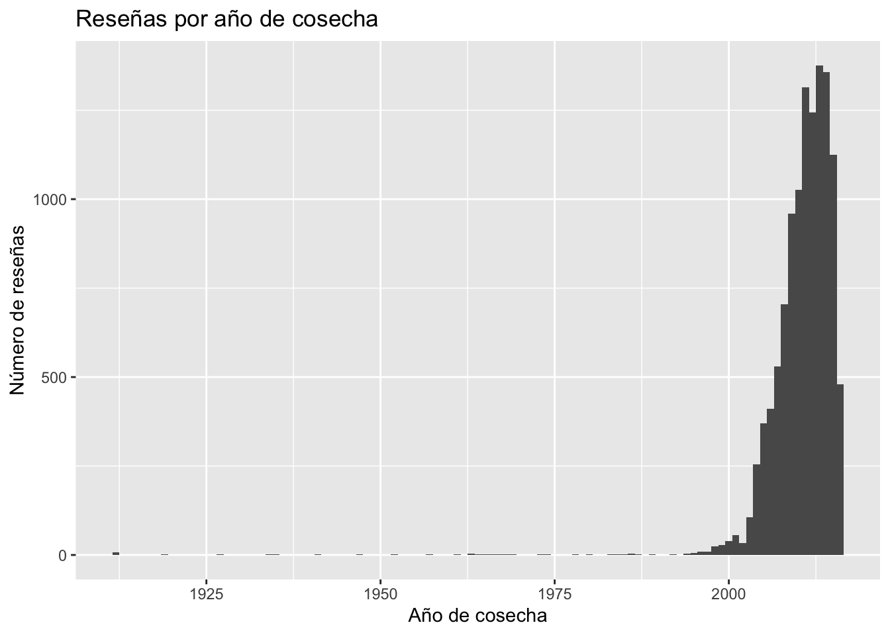
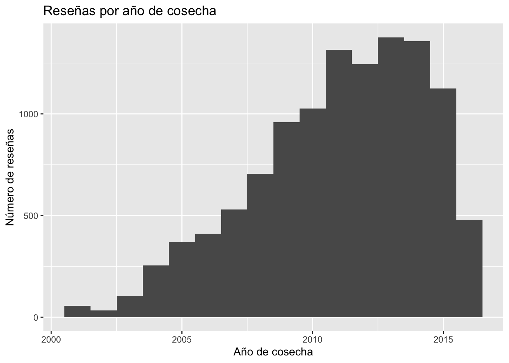
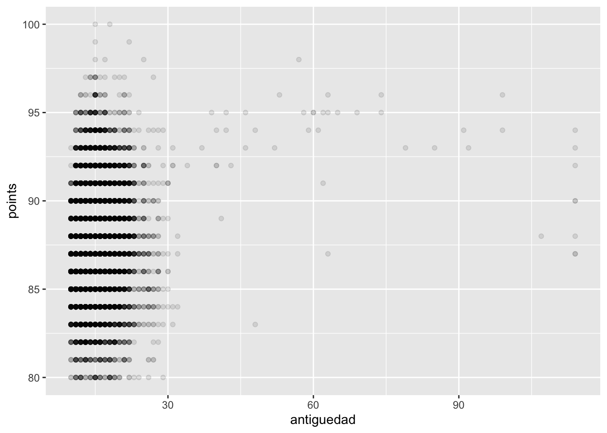
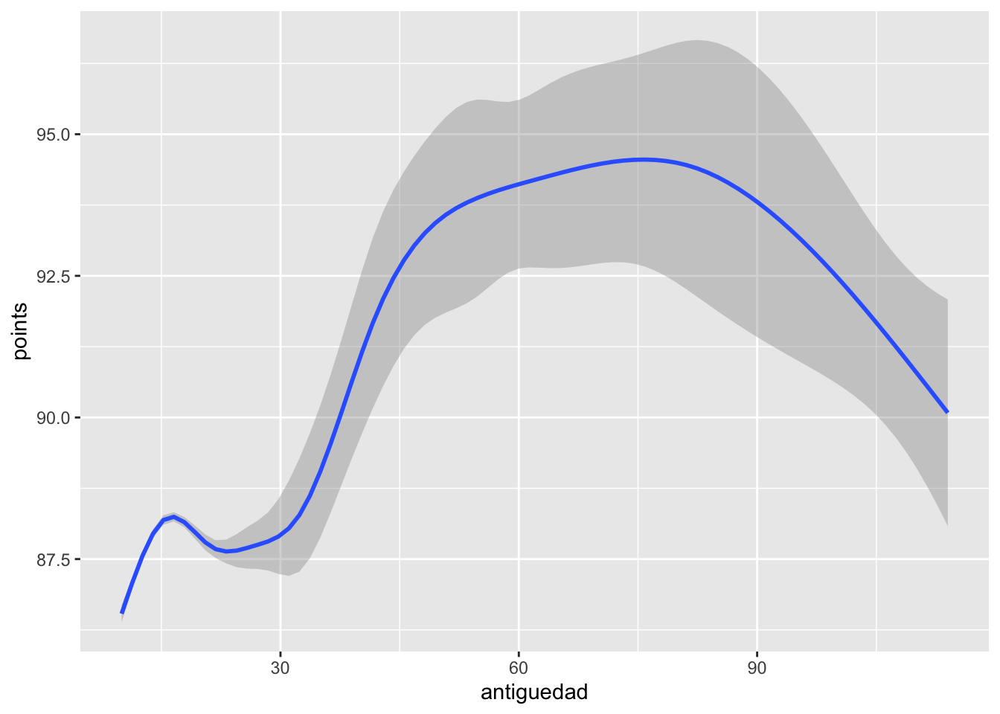
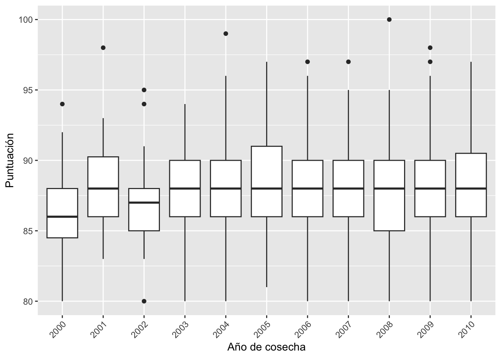
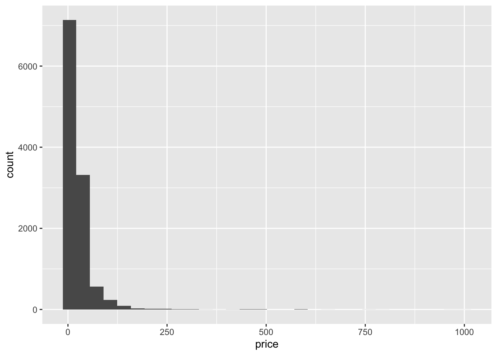
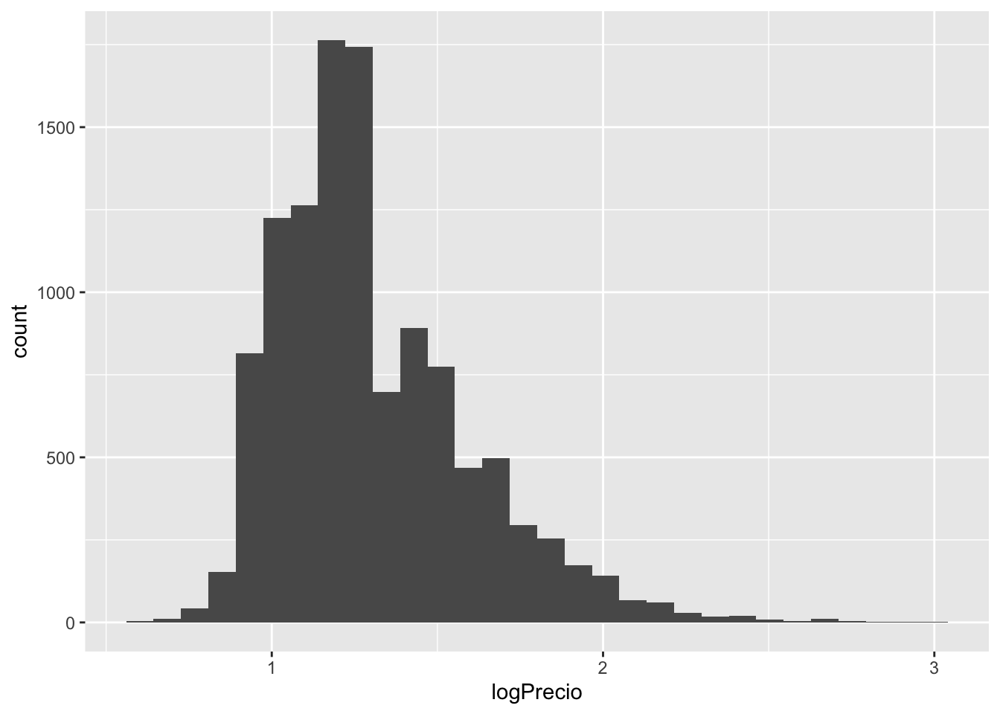
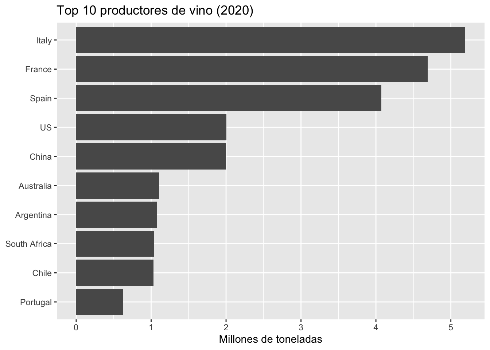

library(readr)
library(dplyr)
library(tidyr)
library(stringr)
library(forcats)
library(ggplot2)
library(purrr)
library(janitor)
library(arrow)Procesos ETL
En los procesos empresariales, generalmente hay que realizar este tipo de tareas con los datos antes de poder utilizarlos. En el proyecto se obtendrán datos de fuentes abiertas (Extract), se transformarán los datos de forma adecuada (Transform), y se cargarán en el “servidor” local de base de datos (Load).
Vamos a seguir los ejemplos y explicaciones de algunos capítulos del libro R for Data Science 2nd ed:
Extract
En este paso de los procesos ETL normalmente se obtienen los datos “brutos”, que se pueden guardar en data lakes, para ser tratados después.
Descarga manual desde Kaggle
La descarga desde Kaggle requiere autenticación, así que en este caso es manual: nos identificamos, descargamos los archivos en la carpeta datos del proyecto.
Advertencia
Descarga los archivos de datos de Kaggle que se indican en la página de bienvenida y guárdalos en la carpeta datos del proyecto.
Descarga automatizada desde URLs abiertas
Cuando los datos están en una URL pública, se puede automatizar la descarga con download.file(), sin necesidad de intervención manual.
# Crear carpeta si no existe
if (!dir.exists("datos")) dir.create("datos")
# Producción mundial de vino 1961-2023 (Our World in Data / FAO-OIV)
url_produccion <- paste0(
"https://ourworldindata.org/grapher/wine-production.csv",
"?v=1&csvType=full&useColumnShortNames=false"
)
download.file(
url = url_produccion,
destfile = "datos/produccion_vino.csv",
method = "auto"
)produccion_raw <- read_csv("datos/produccion_vino.csv")glimpse(produccion_raw)glimpse() es el equivalente a str() de R base, pero en formato tabla con una representación más compacta.
Descarga en bucle de múltiples ficheros con rutas predecibles. Los datos de reseñas de vino están particionados por año y mes en el repositorio del curso:
base_url <- "https://raw.githubusercontent.com/URJCDSLab/storytelling_umu/refs/heads/main/datos/raw/winemag/"
anios <- 1997:2016
meses <- sprintf("%02d", 1:12)
if (!dir.exists("datos/raw/winemag")) dir.create("datos/raw/winemag", recursive = TRUE)
for (a in anios) {
for (m in meses) {
url <- paste0(base_url, "/data-", a, "-", m, ".csv")
destfile <- paste0("datos/raw/winemag/data-", a, "-", m, ".csv")
download.file(url, destfile = destfile, quiet = TRUE)
}
}Una vez descargados, podemos combinar todos los ficheros en un único data frame. La forma más explícita es con un bucle for y bind_rows():
ficheros <- list.files("datos/raw/winemag", pattern = "\\.csv$", full.names = TRUE)
winetasting_raw <- data.frame()
for (f in ficheros) {
chunk <- read_csv(f, show_col_types = FALSE)
winetasting_raw <- bind_rows(winetasting_raw, chunk)
}La misma operación con purrr::map() es más compacta y eficiente (evita copiar el data frame completo en cada iteración):
winetasting_raw <- list.files(
"datos/raw/winemag",
pattern = "\\.csv$",
full.names = TRUE
) |>
map(read_csv, show_col_types = FALSE) |>
list_rbind()Cargar los datos de Kaggle
winetasting <- read_csv("datos/winemag-data-130k-v2.csv") |> rename(id = 1)Rows: 129971 Columns: 14
── Column specification ────────────────────────────────────────────────────────
Delimiter: ","
chr (11): country, description, designation, province, region_1, region_2, t...
dbl (3): id, points, price
ℹ Use `spec()` to retrieve the full column specification for this data.
ℹ Specify the column types or set `show_col_types = FALSE` to quiet this message.nrow(winetasting)[1] 129971glimpse(winetasting)Rows: 129,971
Columns: 14
$ id <dbl> 0, 1, 2, 3, 4, 5, 6, 7, 8, 9, 10, 11, 12, 13, 14…
$ country <chr> "Italy", "Portugal", "US", "US", "US", "Spain", …
$ description <chr> "Aromas include tropical fruit, broom, brimstone…
$ designation <chr> "Vulkà Bianco", "Avidagos", NA, "Reserve Late Ha…
$ points <dbl> 87, 87, 87, 87, 87, 87, 87, 87, 87, 87, 87, 87, …
$ price <dbl> NA, 15, 14, 13, 65, 15, 16, 24, 12, 27, 19, 30, …
$ province <chr> "Sicily & Sardinia", "Douro", "Oregon", "Michiga…
$ region_1 <chr> "Etna", NA, "Willamette Valley", "Lake Michigan …
$ region_2 <chr> NA, NA, "Willamette Valley", NA, "Willamette Val…
$ taster_name <chr> "Kerin O’Keefe", "Roger Voss", "Paul Gregutt", "…
$ taster_twitter_handle <chr> "@kerinokeefe", "@vossroger", "@paulgwine ", NA,…
$ title <chr> "Nicosia 2013 Vulkà Bianco (Etna)", "Quinta dos…
$ variety <chr> "White Blend", "Portuguese Red", "Pinot Gris", "…
$ winery <chr> "Nicosia", "Quinta dos Avidagos", "Rainstorm", "…Transform
Hay múltiples operaciones de transformación. Vamos a practicar con algunas de ellas. Muchas veces se habla de feature engineering sobre todo cuando la transformación va dirigida a la creación de modelos estadísticos.
vinos_ib <- winetasting |>
filter(country %in% c("Spain", "Portugal"))glimpse(vinos_ib)Rows: 12,336
Columns: 14
$ id <dbl> 1, 5, 18, 79, 81, 151, 154, 157, 203, 212, 217, …
$ country <chr> "Portugal", "Spain", "Spain", "Portugal", "Spain…
$ description <chr> "This is ripe and fruity, a wine that is smooth …
$ designation <chr> "Avidagos", "Ars In Vitro", "Vendimia Selecciona…
$ points <dbl> 87, 87, 87, 86, 86, 91, 91, 91, 90, 90, 90, 85, …
$ price <dbl> 15, 15, 28, NA, 16, 30, 50, 26, 28, 40, 20, 13, …
$ province <chr> "Douro", "Northern Spain", "Northern Spain", "Te…
$ region_1 <chr> NA, "Navarra", "Ribera del Duero", NA, "Rías Bai…
$ region_2 <chr> NA, NA, NA, NA, NA, NA, NA, NA, NA, NA, NA, NA, …
$ taster_name <chr> "Roger Voss", "Michael Schachner", "Michael Scha…
$ taster_twitter_handle <chr> "@vossroger", "@wineschach", "@wineschach", "@vo…
$ title <chr> "Quinta dos Avidagos 2011 Avidagos Red (Douro)",…
$ variety <chr> "Portuguese Red", "Tempranillo-Merlot", "Tempran…
$ winery <chr> "Quinta dos Avidagos", "Tandem", "Pradorey", "Ad…Calculamos el porcentaje de registros que son de la península ibérica:
round(100 * nrow(vinos_ib) / nrow(winetasting), 2)[1] 9.49Limpiar nombres de columnas
Ver el efecto que produce cada ejemplo siguiente en el data.frame.
# R base
colnames(vinos_ib) [1] "id" "country" "description"
[4] "designation" "points" "price"
[7] "province" "region_1" "region_2"
[10] "taster_name" "taster_twitter_handle" "title"
[13] "variety" "winery" # cambia winery por nombre bodega
colnames(vinos_ib)[14] <- "nombre bodega"
colnames(vinos_ib) [1] "id" "country" "description"
[4] "designation" "points" "price"
[7] "province" "region_1" "region_2"
[10] "taster_name" "taster_twitter_handle" "title"
[13] "variety" "nombre bodega" head(vinos_ib$`nombre bodega`)[1] "Quinta dos Avidagos" "Tandem"
[3] "Pradorey" "Adega Cooperativa do Cartaxo"
[5] "Spyro" "Herdade Grande" # cambiar nombre bodega por bodega
vinos_ib <- vinos_ib |>
rename(bodega = "nombre bodega")
head(vinos_ib$`bodega`)[1] "Quinta dos Avidagos" "Tandem"
[3] "Pradorey" "Adega Cooperativa do Cartaxo"
[5] "Spyro" "Herdade Grande" vinos_ib <- vinos_ib |>
rename(`nombre bodega` = "bodega")
head(vinos_ib$`nombre bodega`)[1] "Quinta dos Avidagos" "Tandem"
[3] "Pradorey" "Adega Cooperativa do Cartaxo"
[5] "Spyro" "Herdade Grande" Comprobar y cambiar tipo de datos
Ejemplos del libro R for Data Science para corregir errores de datos:
students <- read_csv("https://pos.it/r4ds-students-csv")Rows: 6 Columns: 5
── Column specification ────────────────────────────────────────────────────────
Delimiter: ","
chr (4): Full Name, favourite.food, mealPlan, AGE
dbl (1): Student ID
ℹ Use `spec()` to retrieve the full column specification for this data.
ℹ Specify the column types or set `show_col_types = FALSE` to quiet this message.students <- students |> janitor::clean_names()
students |>
count(age)# A tibble: 6 × 2
age n
<chr> <int>
1 4 1
2 5 1
3 6 1
4 7 1
5 five 1
6 <NA> 1students <- students |>
mutate(edad = as.numeric(
case_when(age == "five" ~ "5",
age == "four" ~ "4",
.default = age)))Extraer el año de cosecha con expresiones regulares
El campo title contiene el año de la cosecha embebido en el texto, por ejemplo "Nicosia 2013 Vulkà Bianco (Etna)". Con {stringr} y una expresión regular podemos extraerlo como variable numérica:
vinos_ib <- vinos_ib |>
mutate(
cosecha = str_extract(title, "(19|20)[0-9]{2}") |> as.integer()
)
vinos_ib |>
count(cosecha, sort = TRUE)# A tibble: 52 × 2
cosecha n
<int> <int>
1 2013 1376
2 2014 1358
3 2011 1314
4 2012 1243
5 2015 1124
6 2010 1027
7 2009 959
8 NA 829
9 2008 704
10 2007 530
# ℹ 42 more rowsLa expresión (19|20)[0-9]{2} captura cualquier secuencia de cuatro dígitos que empiece por 19 o 20.
vinos_ib |>
filter(!is.na(cosecha)) |>
ggplot(aes(x = cosecha)) +
geom_histogram(binwidth = 1) +
labs(title = "Reseñas por año de cosecha",
x = "Año de cosecha", y = "Número de reseñas")
vinos_ib |>
filter(!is.na(cosecha)) |>
filter(cosecha > 2000) |>
ggplot(aes(x = cosecha)) +
geom_histogram(binwidth = 1) +
labs(title = "Reseñas por año de cosecha",
x = "Año de cosecha", y = "Número de reseñas")
PrecauciónEjercicio
Calcula la antigüedad de cada vino respecto al año actual y analiza si los vinos más antiguos tienen puntuaciones más altas. Pista, para calcular el año actual podéis utilizar as.integer(format(Sys.Date(), "%Y"))
TipSolución
vinos_ib <- vinos_ib |>
mutate(antiguedad = as.integer(format(Sys.Date(), "%Y")) - cosecha)
vinos_ib |>
filter(!is.na(antiguedad), !is.na(points)) |>
group_by(antiguedad) |>
summarise(puntos_medio = mean(points), desviacion = sd(points), n = n()) |>
arrange(desc(puntos_medio))# A tibble: 51 × 4
antiguedad puntos_medio desviacion n
<int> <dbl> <dbl> <int>
1 57 98 NA 1
2 53 96 NA 1
3 74 95.5 0.707 2
4 39 95 NA 1
5 58 95 NA 1
6 60 95 0 2
7 65 95 NA 1
8 69 95 NA 1
9 99 95 1.41 2
10 42 94.5 0.707 2
# ℹ 41 more rowsOtra posible forma de hacerlo es a través de una visualización.
Con geom_point() hay demasiados puntos superpuestos para ver algo claro:
vinos_ib |>
filter(!is.na(antiguedad), !is.na(points)) |>
ggplot(aes(x = antiguedad, y = points)) +
geom_point(alpha = 0.1) # Transparencia: donde hay más puntos se ve más oscuro
geom_smooth() muestra la tendencia sin el ruido individual:
vinos_ib |>
filter(!is.na(antiguedad), !is.na(points)) |>
ggplot(aes(x = antiguedad, y = points)) +
geom_smooth() `geom_smooth()` using method = 'gam' and formula = 'y ~ s(x, bs = "cs")'
#+ scale_x_continuous(breaks = seq(min(vinos_ib$antiguedad, na.rm = TRUE), max(vinos_ib$antiguedad, na.rm=TRUE), by = 10)) # Probar una escala customizadaUn boxplot por año de cosecha (agrupado) muestra la distribución completa y los outliers:
vinos_ib |>
filter(!is.na(cosecha), !is.na(points), cosecha >= 2000, cosecha <= 2010) |>
ggplot(aes(x = factor(cosecha), y = points)) +
geom_boxplot() +
labs(x = "Año de cosecha", y = "Puntuación") +
theme(axis.text.x = element_text(angle = 45, hjust = 1))
Parsear y limpiar handles de Twitter
vinos_ib |>
# Normalizar: minúsculas y eliminar el @ inicial para consistencia
mutate(twitter_clean = str_remove(taster_twitter_handle, "^@") |>
str_to_lower()) |>
count(twitter_clean, sort = TRUE)# A tibble: 6 × 2
twitter_clean n
<chr> <int>
1 wineschach 6584
2 vossroger 5658
3 <NA> 69
4 joecz 19
5 paulgwine 4
6 laurbuzz 2Transformar factores con {forcats}
Para trabajar con factores, el paquete {forcats} del tidyverse tiene una colección de funciones muy útiles, se recomienda ver la documentación y los ejemplos en el capítulo Factors de R for data Science.
vinos_ib |>
count(variety) |>
arrange(n)# A tibble: 192 × 2
variety n
<chr> <int>
1 Alvarelhão 1
2 Babosa Negro 1
3 Bastardo 1
4 Bobal-Cabernet Sauvignon 1
5 Cabernet Franc 1
6 Cabernet Sauvignon-Cabernet Franc 1
7 Cabernet Sauvignon-Shiraz 1
8 Cercial 1
9 Chardonnay-Sauvignon Blanc 1
10 Chardonnay-Viognier 1
# ℹ 182 more rowsReducción del número de categorías creando “otros”:
vinos_ib |>
mutate(variedad = fct_lump_min(variety,
min = 80,
other_level = "Otros")) |>
count(variedad)# A tibble: 24 × 2
variedad n
<fct> <int>
1 Albariño 340
2 Alvarinho 136
3 Chardonnay 91
4 Garnacha 313
5 Godello 81
6 Mencía 178
7 Monastrell 140
8 Port 607
9 Portuguese Red 2466
10 Portuguese White 1159
# ℹ 14 more rowsvinos_ib |>
mutate(variedad = fct_lump_lowfreq(variety,
other_level = "Otros")) |>
count(variedad)# A tibble: 192 × 2
variedad n
<fct> <int>
1 Airen 3
2 Albariño 340
3 Alfrocheiro 16
4 Alicante Bouschet 44
5 Alvarelhão 1
6 Alvarinho 136
7 Alvarinho-Chardonnay 5
8 Antão Vaz 17
9 Aragonês 10
10 Aragonez 10
# ℹ 182 more rowsCalcular nuevas columnas
Conversión de precio de dólares a euros:
vinos_ib <- vinos_ib |>
mutate(precio_eur = price * 0.92)Transformaciones numéricas
Transformación logarítmica (observa el cambio en la distribución):
vinos_ib |>
ggplot(aes(price)) +
geom_histogram()`stat_bin()` using `bins = 30`. Pick better value `binwidth`.Warning: Removed 888 rows containing non-finite outside the scale range
(`stat_bin()`).
vinos_ib <- vinos_ib |>
mutate(logPrecio = log(price, base = 10))
vinos_ib |>
ggplot(aes(logPrecio)) +
geom_histogram()`stat_bin()` using `bins = 30`. Pick better value `binwidth`.Warning: Removed 888 rows containing non-finite outside the scale range
(`stat_bin()`).
Tipificación:
vinos_ib |>
slice_max(price, n = 5)# A tibble: 5 × 18
id country description designation points price province region_1 region_2
<dbl> <chr> <chr> <chr> <dbl> <dbl> <chr> <chr> <chr>
1 36531 Portugal This Port … 90-year Ol… 97 1000 Port <NA> <NA>
2 41441 Portugal This was a… Colheita W… 94 980 Port <NA> <NA>
3 78235 Portugal Sweet, sur… Colheita 87 790 Port <NA> <NA>
4 15846 Spain This singl… El Perer 96 770 Catalon… Priorat <NA>
5 90583 Portugal While this… Colheita T… 93 770 Port <NA> <NA>
# ℹ 9 more variables: taster_name <chr>, taster_twitter_handle <chr>,
# title <chr>, variety <chr>, `nombre bodega` <chr>, cosecha <int>,
# antiguedad <int>, precio_eur <dbl>, logPrecio <dbl>vinos_ib |>
mutate(scaled_price = scale(price),
.after = price)# A tibble: 12,336 × 19
id country description designation points price scaled_price[,1] province
<dbl> <chr> <chr> <chr> <dbl> <dbl> <dbl> <chr>
1 1 Portugal This is ri… Avidagos 87 15 -0.329 Douro
2 5 Spain Blackberry… Ars In Vit… 87 15 -0.329 Norther…
3 18 Spain Desiccated… Vendimia S… 87 28 0.0169 Norther…
4 79 Portugal Grown on t… Bridão 86 NA NA Tejo
5 81 Spain Bland, mat… <NA> 86 16 -0.302 Galicia
6 151 Portugal This bottl… Gerações C… 91 30 0.0701 Alentej…
7 154 Spain Ripe aroma… Single Vin… 91 50 0.602 Central…
8 157 Portugal From an es… Grande Res… 91 26 -0.0363 Alentej…
9 203 Portugal A year in … Montes Cla… 90 28 0.0169 Alentejo
10 212 Spain Mellow whi… Fermentado… 90 40 0.336 Norther…
# ℹ 12,326 more rows
# ℹ 11 more variables: region_1 <chr>, region_2 <chr>, taster_name <chr>,
# taster_twitter_handle <chr>, title <chr>, variety <chr>,
# `nombre bodega` <chr>, cosecha <int>, antiguedad <int>, precio_eur <dbl>,
# logPrecio <dbl>Ordenar las columnas:
vinos_ib <- vinos_ib |>
relocate(precio_eur, .after = price)También tendríamos la primera .before = everything() o la última .after = last_col().
Tratamiento de valores perdidos
vinos_ib |>
filter(is.na(price))# A tibble: 888 × 18
id country description designation points price precio_eur province
<dbl> <chr> <chr> <chr> <dbl> <dbl> <dbl> <chr>
1 79 Portugal Grown on the san… Bridão 86 NA NA Tejo
2 875 Portugal The latest relea… <NA> 90 NA NA Douro
3 986 Portugal This is a sweet,… Late Bottl… 88 NA NA Port
4 1279 Portugal A just off-dry V… Praia 84 NA NA Vinho V…
5 1870 Portugal Pitch-black wine… Picos de C… 93 NA NA Dão
6 2017 Portugal This attractive … 3 Castas 87 NA NA Tejo
7 2033 Portugal Still young, it … <NA> 87 NA NA Tejo
8 2104 Portugal Ripe, smooth, ju… Aragonez 87 NA NA Alentej…
9 2135 Spain Clover and apple… Reserva Cu… 85 NA NA Catalon…
10 2787 Portugal Soft, round and … Boa Memóri… 84 NA NA Alentej…
# ℹ 878 more rows
# ℹ 10 more variables: region_1 <chr>, region_2 <chr>, taster_name <chr>,
# taster_twitter_handle <chr>, title <chr>, variety <chr>,
# `nombre bodega` <chr>, cosecha <int>, antiguedad <int>, logPrecio <dbl>vinos_ib |>
filter(is.na(taster_name))# A tibble: 69 × 18
id country description designation points price precio_eur province
<dbl> <chr> <chr> <chr> <dbl> <dbl> <dbl> <chr>
1 7154 Spain This new consumer… Old Vine G… 84 13 12.0 Norther…
2 7824 Spain This lighter-styl… Gran Reser… 87 29 26.7 Norther…
3 7833 Spain This structured, … Can Feixes… 87 10 9.2 Catalon…
4 7837 Spain This medium-to fu… Cosecha 87 7 6.44 Levante
5 7846 Spain This lively white… <NA> 87 13 12.0 Galicia
6 10204 Spain There’s plenty of… Brut 86 9 8.28 Catalon…
7 10205 Spain Bone-dry and aust… Brut Natur… 86 17 15.6 Catalon…
8 10218 Spain A pleasant, softl… Cordon Neg… 85 8 7.36 Catalon…
9 10222 Spain This just off-dry… Semi-Seco … 85 13 12.0 Catalon…
10 10223 Spain Starts out with s… Blanc de B… 85 6 5.52 Catalon…
# ℹ 59 more rows
# ℹ 10 more variables: region_1 <chr>, region_2 <chr>, taster_name <chr>,
# taster_twitter_handle <chr>, title <chr>, variety <chr>,
# `nombre bodega` <chr>, cosecha <int>, antiguedad <int>, logPrecio <dbl>vinos_ib |>
replace_na(list(taster_name = "DESCONOCIDO",
price = median(vinos_ib$price, na.rm = TRUE)))# A tibble: 12,336 × 18
id country description designation points price precio_eur province
<dbl> <chr> <chr> <chr> <dbl> <dbl> <dbl> <chr>
1 1 Portugal This is ripe and… Avidagos 87 15 13.8 Douro
2 5 Spain Blackberry and r… Ars In Vit… 87 15 13.8 Norther…
3 18 Spain Desiccated black… Vendimia S… 87 28 25.8 Norther…
4 79 Portugal Grown on the san… Bridão 86 18 NA Tejo
5 81 Spain Bland, mature ar… <NA> 86 16 14.7 Galicia
6 151 Portugal This bottling sh… Gerações C… 91 30 27.6 Alentej…
7 154 Spain Ripe aromas of r… Single Vin… 91 50 46 Central…
8 157 Portugal From an estate i… Grande Res… 91 26 23.9 Alentej…
9 203 Portugal A year in wood a… Montes Cla… 90 28 25.8 Alentejo
10 212 Spain Mellow white-fru… Fermentado… 90 40 36.8 Norther…
# ℹ 12,326 more rows
# ℹ 10 more variables: region_1 <chr>, region_2 <chr>, taster_name <chr>,
# taster_twitter_handle <chr>, title <chr>, variety <chr>,
# `nombre bodega` <chr>, cosecha <int>, antiguedad <int>, logPrecio <dbl>vinos_ib <- vinos_ib |>
select(-region_2)
vinos_ib |>
drop_na(points, price)# A tibble: 11,448 × 17
id country description designation points price precio_eur province
<dbl> <chr> <chr> <chr> <dbl> <dbl> <dbl> <chr>
1 1 Portugal This is ripe and… Avidagos 87 15 13.8 Douro
2 5 Spain Blackberry and r… Ars In Vit… 87 15 13.8 Norther…
3 18 Spain Desiccated black… Vendimia S… 87 28 25.8 Norther…
4 81 Spain Bland, mature ar… <NA> 86 16 14.7 Galicia
5 151 Portugal This bottling sh… Gerações C… 91 30 27.6 Alentej…
6 154 Spain Ripe aromas of r… Single Vin… 91 50 46 Central…
7 157 Portugal From an estate i… Grande Res… 91 26 23.9 Alentej…
8 203 Portugal A year in wood a… Montes Cla… 90 28 25.8 Alentejo
9 212 Spain Mellow white-fru… Fermentado… 90 40 36.8 Norther…
10 217 Portugal Wood aging gives… <NA> 90 20 18.4 Beira A…
# ℹ 11,438 more rows
# ℹ 9 more variables: region_1 <chr>, taster_name <chr>,
# taster_twitter_handle <chr>, title <chr>, variety <chr>,
# `nombre bodega` <chr>, cosecha <int>, antiguedad <int>, logPrecio <dbl>Tratamiento de outliers
Básicamente igual que los valores perdidos, pero se puede analizar más.
Unión con tabla de Denominaciones de Origen
Creamos una tabla de referencia con las principales DOs españolas y la comunidad autónoma a la que pertenecen:
dos_espana <- tibble::tribble(
~do, ~comunidad,
# DO principales
"Rioja", "La Rioja / País Vasco / Navarra",
"Ribera del Duero", "Castilla y León",
"Priorat", "Cataluña",
"Rías Baixas", "Galicia",
"Rueda", "Castilla y León",
"Penedès", "Cataluña",
"Cava", "Cataluña (principalmente)",
"Toro", "Castilla y León",
"Bierzo", "Castilla y León",
"Navarra", "Navarra",
"Somontano", "Aragón",
"Montsant", "Cataluña",
"Costers del Segre", "Cataluña",
"Yecla", "Murcia",
# Andalucía
"Jerez", "Andalucía",
"Manzanilla-Sanlúcar de Barrameda", "Andalucía",
"Málaga", "Andalucía",
"Montilla-Moriles", "Andalucía",
# Castilla-La Mancha
"La Mancha", "Castilla-La Mancha",
"Valdepeñas", "Castilla-La Mancha",
"Manchuela", "Castilla-La Mancha",
"Almansa", "Castilla-La Mancha",
"Uclés", "Castilla-La Mancha",
"Mentrida", "Castilla-La Mancha",
# Castilla y León
"Cigales", "Castilla y León",
"Tierra de León", "Castilla y León",
"Arribes del Duero", "Castilla y León",
"Sierra de Salamanca", "Castilla y León",
# Aragón
"Cariñena", "Aragón",
"Campo de Borja", "Aragón",
"Calatayud", "Aragón",
# Comunitat Valenciana
"Valencia", "Comunitat Valenciana",
"Alicante", "Comunitat Valenciana",
"Utiel-Requena", "Comunitat Valenciana",
# Cataluña
"Terra Alta", "Cataluña",
"Catalunya", "Cataluña",
"Catalonia", "Cataluña",
"Empordà", "Cataluña",
"Conca de Barberà", "Cataluña",
"Tarragona", "Cataluña",
"Alella", "Cataluña",
"Pla de Bages", "Cataluña",
# Galicia
"Valdeorras", "Galicia",
"Ribeiro", "Galicia",
"Ribeira Sacra", "Galicia",
"Monterrei", "Galicia",
# País Vasco
"Txakoli de Getaria", "País Vasco",
"Getariako Txakolina", "País Vasco",
"Bizkaiko Txakolina", "País Vasco",
# Madrid
"Vinos de Madrid", "Comunidad de Madrid",
# Murcia
"Jumilla", "Murcia / Castilla-La Mancha",
# Extremadura
"Ribera del Guadiana", "Extremadura"
)
# Unir con los vinos españoles por region_1
vinos_es_do <- vinos_ib |>
filter(country == "Spain") |>
left_join(dos_espana, by = c("region_1" = "do"))
vinos_es_do |>
count(comunidad, sort = TRUE)# A tibble: 16 × 2
comunidad n
<chr> <int>
1 La Rioja / País Vasco / Navarra 1469
2 Castilla y León 1455
3 Cataluña 686
4 <NA> 527
5 Cataluña (principalmente) 497
6 Galicia 460
7 Aragón 448
8 Comunitat Valenciana 234
9 Navarra 223
10 Castilla-La Mancha 193
11 Murcia / Castilla-La Mancha 191
12 Andalucía 179
13 País Vasco 43
14 Murcia 24
15 Comunidad de Madrid 10
16 Extremadura 6# El ~8% sin coincidencia corresponde a:
# - "Vino de la Tierra de Castilla/Castilla y León": IGPs que abarcan toda una región
# - "Spain": reseñas sin región especificada
# - Pagos de viñedo único (Dominio de Valdepusa, Pago de Arínzano)
# En estos casos el LEFT JOIN devuelve NA, que es el comportamiento correcto.Agrupar y resumir
vinos_ib |>
drop_na(points, price) |>
group_by(country) |>
summarise(
n_resenas = n(),
precio_medio = mean(price),
puntos_medio = mean(points)
)# A tibble: 2 × 4
country n_resenas precio_medio puntos_medio
<chr> <int> <dbl> <dbl>
1 Portugal 4875 26.2 88.3
2 Spain 6573 28.2 87.3Preparar tabla de producción
produccion_raw <- read_csv("datos/produccion_vino.csv")Rows: 5996 Columns: 4
── Column specification ────────────────────────────────────────────────────────
Delimiter: ","
chr (2): Entity, Code
dbl (2): Year, Wine - Production (tonnes)
ℹ Use `spec()` to retrieve the full column specification for this data.
ℹ Specify the column types or set `show_col_types = FALSE` to quiet this message.# Limpiar: renombrar columnas, filtrar países reales (quitar agregados)
produccion_vino <- produccion_raw |>
rename(
pais = Entity,
codigo_iso = Code,
anio = Year,
produccion_toneladas = `Wine - Production (tonnes)`
) |>
# Eliminar agregados regionales (no tienen código ISO de 3 letras)
filter(str_length(codigo_iso) == 3,
!str_detect(codigo_iso, "OWID")) |>
drop_na(produccion_toneladas) |>
# Armonizar nombres de país con los del dataset de catas
mutate(pais = recode(pais,
"United States" = "US",
"Czechia" = "Czech Republic",
"North Macedonia"= "Macedonia",
"United Kingdom" = "England"
))
glimpse(produccion_vino)Rows: 3,563
Columns: 4
$ pais <chr> "Albania", "Albania", "Albania", "Albania", "Alba…
$ codigo_iso <chr> "ALB", "ALB", "ALB", "ALB", "ALB", "ALB", "ALB", …
$ anio <dbl> 1961, 1962, 1963, 1964, 1965, 1966, 1967, 1968, 1…
$ produccion_toneladas <dbl> 3560, 4570, 2291, 3069, 4016, 4767, 6174, 7190, 1…Exploracion de los principales productores en años recientes:
produccion_vino |>
filter(anio == 2020) |>
slice_max(produccion_toneladas, n = 10) |>
ggplot(aes(x = reorder(pais, produccion_toneladas),
y = produccion_toneladas / 1e6)) +
geom_col() +
coord_flip() +
labs(title = "Top 10 productores de vino (2020)",
x = NULL, y = "Millones de toneladas")
Load
La última parte del proceso ETL tiene que ver con la carga de datos “limpios” en el lugar desde el que van a ser “explotados”. El output del ETL son ficheros limpios que otros procesos (como la carga en base de datos) consumirán después.
Creamos la carpeta de datos limpios si no existe:
if (!dir.exists("datos/clean")) dir.create("datos/clean")La opción más sencilla en R es guardar en formato RDS, nativo de R:
saveRDS(winetasting, "datos/clean/tasting.rds")
saveRDS(produccion_vino, "datos/clean/produccion_vino.rds")
saveRDS(dos_espana, "datos/clean/dos_espana.rds")En entornos de producción se prefiere Parquet: es más compacto, más rápido y puede ser leído por Python, Spark, DuckDB, etc. — no está atado a R:
write_parquet(winetasting, "datos/clean/tasting.parquet")
write_parquet(produccion_vino, "datos/clean/produccion_vino.parquet")
write_parquet(dos_espana, "datos/clean/dos_espana.parquet")Con esto el ETL ha terminado. Los ficheros en datos/clean/ son el punto de partida para la siguiente sesión: Bases de datos.
Resumen
Por supuesto, los procesos ETL (Extract, Transform, Load) son fundamentales en la integración y gestión de datos en sistemas de almacenamiento, como almacenes de datos (data warehouses). A continuación se describen brevemente las tres fases principales de los procesos ETL:
- Extracción (Extract):
- Objetivo: Obtener datos de diversas fuentes, que pueden ser bases de datos, archivos, aplicaciones, APIs, etc.
- Actividades:
- Conectar con las fuentes de datos.
- Extraer los datos necesarios, asegurando que se capturen todos los datos relevantes y se minimicen los impactos en las fuentes originales.
- Transformación (Transform):
- Objetivo: Convertir los datos extraídos a un formato adecuado para el análisis y cargarlos en el almacén de datos.
- Actividades:
- Limpieza de datos: Eliminar duplicados, manejar valores nulos, corregir errores.
- Estandarización: Convertir datos a formatos comunes.
- Enriquecimiento: Agregar datos adicionales que pueden ser útiles para el análisis.
- Agregación: Resumir datos para facilitar su análisis.
- Integración: Combinar datos de diferentes fuentes en un formato unificado.
- Carga (Load):
- Objetivo: Importar los datos transformados en el sistema de destino, como un almacén de datos.
- Actividades:
- Cargar datos en tablas del almacén de datos.
- Verificación de la integridad de los datos cargados.
- Optimización del rendimiento de la carga, asegurando que se minimicen los tiempos de inactividad y los impactos en los usuarios del sistema de destino.
Estos procesos ETL aseguran que los datos sean accesibles, precisos y útiles para el análisis, facilitando la toma de decisiones basada en datos dentro de las organizaciones.